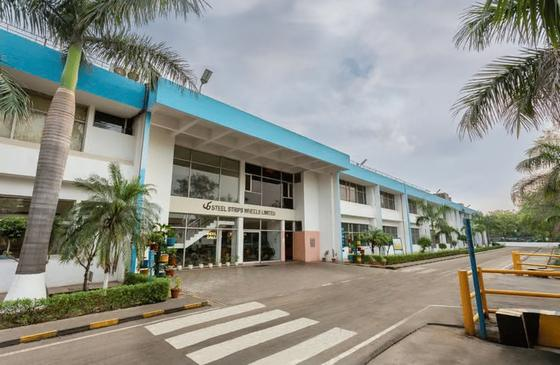
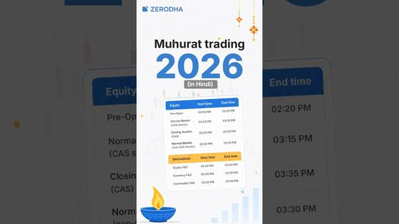

Executive Synthesis: A post-election reset in Washington, Wall Street's resilient payrolls print, Dalal Street's 1,700-point rally, and a breakthrough deep dive on production agent context engineering.
Markets and Money
Friday brought a major risk-on rally across global bourses: Dalal Street surged with the Sensex jumping 1,718 points to 81,028 as Nifty reclaimed 25,000, while US equity indexes absorbed a robust 165,000-job October payrolls print and record AMD datacenter revenues.
US markets
| AP News: | yesterday · 3m |
Takeaway: Provides a comprehensive index and sector readout for your daily market-tracking routine.
| CNN Business: | yesterday · 4m |
 US economy added 165,000 jobs in October as unemployment fell to 4.1%
—
Bureau of Labor Statistics data released Friday, Nov. 6 showed U.S. employers added 165,000 nonfarm payroll jobs in October, well above consensus forecasts of 65,000. The unemployment rate edged down to 4.1% from 4.2% in September. Net revisions added 84,000 jobs to prior months, lifting August payrolls by 53,000 to 186,000 and September by 31,000 to 60,000. Average hourly earnings rose 0.4% month-over-month. The unexpectedly robust employment print reinforced economic resilience while prompting traders to calibrate Federal Reserve interest-rate expectations ahead of upcoming policy meetings.
US economy added 165,000 jobs in October as unemployment fell to 4.1%
—
Bureau of Labor Statistics data released Friday, Nov. 6 showed U.S. employers added 165,000 nonfarm payroll jobs in October, well above consensus forecasts of 65,000. The unemployment rate edged down to 4.1% from 4.2% in September. Net revisions added 84,000 jobs to prior months, lifting August payrolls by 53,000 to 186,000 and September by 31,000 to 60,000. Average hourly earnings rose 0.4% month-over-month. The unexpectedly robust employment print reinforced economic resilience while prompting traders to calibrate Federal Reserve interest-rate expectations ahead of upcoming policy meetings.
Takeaway: Offers a primary macroeconomic anchor alongside your tracking of interest rates and equity valuations.
| Advanced Micro Devices Investor Relations: | 4 days ago · 4m |
 AMD reports record $13.4 billion third-quarter revenue as Data Center sales double
—
AMD reported record third-quarter revenue of $13.4 billion on Nov. 3, up 45% year over year, led by its Data Center segment surging 97% to $8.5 billion on rapid adoption of Instinct GPUs and EPYC server processors. Non-GAAP diluted EPS rose 74% to $2.09, and gross margin reached 56%. Management guided fourth-quarter 2026 revenue to approximately $17 billion. Following mid-week election volatility, AMD shares rallied 11% to close at $449.04 on Friday, Nov. 6.
AMD reports record $13.4 billion third-quarter revenue as Data Center sales double
—
AMD reported record third-quarter revenue of $13.4 billion on Nov. 3, up 45% year over year, led by its Data Center segment surging 97% to $8.5 billion on rapid adoption of Instinct GPUs and EPYC server processors. Non-GAAP diluted EPS rose 74% to $2.09, and gross margin reached 56%. Management guided fourth-quarter 2026 revenue to approximately $17 billion. Following mid-week election volatility, AMD shares rallied 11% to close at $449.04 on Friday, Nov. 6.
Takeaway: Connects directly to your tracking of semiconductor architecture and AI compute hardware suppliers.
| PR Newswire: | 3 days ago · 4m |
Takeaway: Adds company-specific evidence on custom silicon diversification and edge-to-cloud connectivity.
| Arista Networks: | 4 days ago · 4m |
Takeaway: Directly relevant to your monitoring of AI networking infrastructure and hyperscale cloud providers.
| DigitalOcean Investor Relations: | 4 days ago · 4m |
Takeaway: Informs your evaluation of cloud inference economics and developer AI platform expansion.
| PR Newswire: | 2 days ago · 4m |
Takeaway: Supplies verified commercial performance data for your broader US equity and healthcare tracking.
| Blue Owl Capital Corporation: | 3 days ago · 4m |
Blue Owl Capital Corporation announces Q3 results and raises NAV per share to $14.32
—
Blue Owl Capital Corporation reported third-quarter financial results on Nov. 4, posting net asset value (NAV) per share of $14.32, up from $14.26 in the prior quarter. Net investment income was $0.34 per share, comfortably covering its regular base dividend. The board declared a fourth-quarter base dividend of $0.31 per share plus a $0.01 supplemental dividend. Portfolio credit quality remained stable, with non-accrual investments holding at 0.8% of fair value across its $15.1 billion direct-lending investment portfolio.
Takeaway: Offers insight into direct lending credit trends and private market yields.
| Cheniere Energy, Inc.: | 5 days ago · 3m |
Cheniere Energy prices $1.2 billion of 5.800% senior notes due 2037
—
Cheniere Energy priced an upsized public offering of $1.2 billion in 5.800% Senior Notes due March 2037 at 99.313% of par on Nov. 2, with settlement expected on Nov. 17. The company stated net proceeds will be allocated toward general corporate purposes, including capital expenditures, working capital, and refinancing existing subsidiary debt such as Cheniere Corpus Christi Holdings 5.125% Senior Secured Notes maturing in 2027. The issuance follows Cheniere recent raise in full-year 2026 EBITDA guidance to $8.75 billion to $9.25 billion.
Takeaway: Provides capital-structure and debt-issuance context for major US energy infrastructure players.
India markets
| The Hindu: | yesterday · 3m |
 BSE Sensex Jumps 1,718 Points and Nifty Reclaims 25,000 in Seventh Day of Gains
—
Indian benchmark equity indices extended their winning streak to a seventh straight session on Friday, November 6, 2026, defying a sharp global market rout. The 30-share BSE Sensex surged 1,718.01 points, or 2.17%, to close at the day's high of 81,028.02. Concurrently, the 50-share NSE Nifty gained 493.75 points, or 2.01%, to settle at 25,030.35, successfully reclaiming the 25,000 mark. The rally was underpinned by sustained foreign institutional inflows and easing crude oil prices, with heavyweights including Mahindra & Mahindra, ICICI Bank, and HDFC Bank leading gains while Power Grid was the lone blue-chip laggard.
BSE Sensex Jumps 1,718 Points and Nifty Reclaims 25,000 in Seventh Day of Gains
—
Indian benchmark equity indices extended their winning streak to a seventh straight session on Friday, November 6, 2026, defying a sharp global market rout. The 30-share BSE Sensex surged 1,718.01 points, or 2.17%, to close at the day's high of 81,028.02. Concurrently, the 50-share NSE Nifty gained 493.75 points, or 2.01%, to settle at 25,030.35, successfully reclaiming the 25,000 mark. The rally was underpinned by sustained foreign institutional inflows and easing crude oil prices, with heavyweights including Mahindra & Mahindra, ICICI Bank, and HDFC Bank leading gains while Power Grid was the lone blue-chip laggard.
Takeaway: Essential context for your tracking of Indian equity benchmark regimes, large-cap momentum, and domestic decoupling from global market pullbacks.
| Mint: | today · 4m |
Takeaway: Directly relevant to your tracking of SEBI regulatory governance, compliance frameworks, and capital market enforcement procedures in India.
| Groww: | yesterday · 2m |
Takeaway: Provides verified institutional flow dynamics for your tracking of foreign capital liquidity and domestic institutional rebalancing across Indian equities.
| CorpLawUpdates: | 3 days ago · 4m |
SEBI Relaxes Digital KYC Onboarding for Individual NRIs and OCIs from Abroad
—
In Circular HO/38/30/12(3)2026-MIRSD-POD2/I/25175/2026 issued November 4, 2026, SEBI relaxed Know Your Customer (KYC) onboarding requirements for individual Persons Resident Outside India (PROIs). Effective December 3, 2026, individual NRIs, OCIs, and foreign nationals residing in FATF-compliant jurisdictions can complete KYC digitally without requiring physical presence in India during onboarding. Intermediaries are permitted to accept digital submissions supported by video in-person verification and official database validation, and must transmit verified records to KYC Registration Agencies within three working days. Non-individual entities and clients in FATF non-compliant regions remain subject to existing physical processes.
Takeaway: Connects to your interest in Indian regulatory reforms and streamlined cross-border participation mechanisms for overseas individuals.
| Aurobindo Pharma: | 3 days ago · 4m |
Takeaway: Relevant to your focus on Indian pharmaceutical manufacturing, global formulations export trends, and CDMO scale.
| National Stock Exchange of India: | yesterday · 3m |
Takeaway: Aligns with your tracking of Indian defence electronics, marine engineering equipment, and domestic electrical infrastructure suppliers.
| GuruFocus: | yesterday · 4m |
Takeaway: Directly ties to your interest in Indian precision manufacturing, capital goods, and domestic CNC machine tool capacity.
| Autocar Professional: | 5 days ago · 3m |

Steel Strips Wheels Achieves Fourth Consecutive Monthly Sales Record in October 2026 — Automotive wheel rim manufacturer Steel Strips Wheels Limited (SSWL) recorded its fourth consecutive record sales turnover in October 2026, with net monthly turnover advancing 55.58% year-on-year to ₹647.05 crore, surpassing its prior September record of ₹625.81 crore. Gross turnover reached ₹753.65 crore, supported by a 29% expansion in overall volume and 56% value growth. Revenue acceleration was propelled by high capacity utilization for aluminum alloy wheels at the Mehsana plant (up 66% YoY), commercial vehicle wheel demand (up 53% YoY), and strong international OEM export orders surging 179% YoY.
Takeaway: Connects with your tracking of Indian auto components, industrial forging, and export-driven automotive suppliers.
| ETRealty: | 4 days ago · 3m |
Ajmera Realty Reports 48% Rise in Q2 Net Profit to ₹45 Crore and Reduces Debt
—
Ajmera Realty & Infra India reported a 48.2% year-on-year increase in consolidated net profit to ₹45.01 crore for Q2 FY27, as total income expanded 44.5% YoY to ₹320 crore. Operational sales value reached ₹224 crore across 72,883 sq. ft., showing a 54% sequential recovery from Q1 despite year-on-year base moderation. The company reduced debt by ₹34 crore during the quarter to bring total debt down to ₹646 crore, improving its debt-to-equity ratio to 0.44x while lowering weighted average borrowing costs to 10.75% per annum.
Takeaway: Provides context for your tracking of Indian mid-cap real estate developers, balance sheet deleveraging, and residential sales cycles.
The week ahead
| Applied Materials Investor Relations: | yesterday · 2m |
Takeaway: Tracks global wafer-fabrication equipment spending and advanced packaging capacity across the AI semiconductor supply chain.
| U.S. Bureau of Labor Statistics: | yesterday · 2m |
Takeaway: Key wholesale inflation metric tracking intermediate supply-chain costs and margin pressures ahead of Federal Reserve policy deliberations.
| Cisco Investor Relations: | yesterday · 2m |
Takeaway: Provides visibility into enterprise networking expenditure, data center switching deployments, and cloud infrastructure demand.
| Ministry of Statistics and Programme Implementation: | yesterday · 2m |
Takeaway: Headline retail inflation print shaping domestic liquidity conditions and Reserve Bank of India interest-rate policy expectations.
| BSE India: | yesterday · 2m |
Takeaway: Directly tracks order execution and quarterly financial progress in India's defence electronics and radar subsystems manufacturing sector.
| Federal Reserve Board: | yesterday · 2m |
Federal Reserve Board Addresses AI Macroeconomics and Supervision on November 12–13
—
The Federal Reserve Board of Governors public calendar highlights multiple senior policymaker appearances following the Veterans Day mid-week holiday. Governor Michael S. Barr delivers a virtual address on Artificial Intelligence and Inequality on Thursday, November 12, 2026, at 10:00 a.m. Eastern Time. On Friday, November 13, Vice Chair for Supervision Michelle W. Bowman speaks at 10:50 a.m. Eastern Time, followed by Vice Chair Philip N. Jefferson discussing technology and macroeconomic productivity at 7:00 p.m. Pacific Time.
Takeaway: Offers official central bank perspectives on artificial intelligence productivity, technological adoption, and monetary policy implications.
Watch
| CNBC Television: | yesterday · 3m |
 Market Close: Stocks End Week In Red, AI Debate Continues, Strong Jobs Report • 11/6/26
—
CNBC's Friday closing wrap outlines how major US indices closed the week lower despite resilient employment data. The broadcast covers crosscurrents in technology equities as debate over AI capital expenditure returns continues to weigh on software and hardware valuations. Market analysts examine sector rotations into defensive segments and analyze Treasury yield reactions following the latest economic releases.
Market Close: Stocks End Week In Red, AI Debate Continues, Strong Jobs Report • 11/6/26
—
CNBC's Friday closing wrap outlines how major US indices closed the week lower despite resilient employment data. The broadcast covers crosscurrents in technology equities as debate over AI capital expenditure returns continues to weigh on software and hardware valuations. Market analysts examine sector rotations into defensive segments and analyze Treasury yield reactions following the latest economic releases.
Takeaway: Delivers an essential weekly wrap on US equity moves, sector rotation, and AI infrastructure market sentiment.
| Bloomberg Podcasts: | today · 34m |
 Trump Taps Stephen Miller as New Chief of Staff; Chip Stocks Climb After Rout | Bloomberg Podcasts
—
Bloomberg's daily market briefing reviews an intraday rebound across semiconductor equities following a sharp multi-session selloff. Hosts Carol Massar and Tim Stenovec analyze dip-buying activity in major chipmakers alongside macro data that influenced market expectations for the Federal Reserve's December policy decisions. The discussion also evaluates the economic and policy implications of White House staffing announcements.
Trump Taps Stephen Miller as New Chief of Staff; Chip Stocks Climb After Rout | Bloomberg Podcasts
—
Bloomberg's daily market briefing reviews an intraday rebound across semiconductor equities following a sharp multi-session selloff. Hosts Carol Massar and Tim Stenovec analyze dip-buying activity in major chipmakers alongside macro data that influenced market expectations for the Federal Reserve's December policy decisions. The discussion also evaluates the economic and policy implications of White House staffing announcements.
Takeaway: Connects semiconductor sector price dynamics with broader macroeconomic indicators and interest-rate expectations.
| CNBC-TV18: | today · 10m |
 Samvat 2083 Outlook: Should Investors Bet On Large Caps? Top Stocks & Themes | N18V
—
In this CNBC-TV18 Samvat 2083 special, fund managers from Carnelian Asset Management, IKIGAI Asset Manager, and Kotak Mahindra AMC evaluate Indian equity valuations as the new Hindu calendar year begins. The panel breaks down the diverging dynamics between foreign institutional investor (FII) outflows and resilient domestic institutional investor (DII) inflows, comparing large-cap risk-reward profiles with broader market segments across key manufacturing and financial sectors.
Samvat 2083 Outlook: Should Investors Bet On Large Caps? Top Stocks & Themes | N18V
—
In this CNBC-TV18 Samvat 2083 special, fund managers from Carnelian Asset Management, IKIGAI Asset Manager, and Kotak Mahindra AMC evaluate Indian equity valuations as the new Hindu calendar year begins. The panel breaks down the diverging dynamics between foreign institutional investor (FII) outflows and resilient domestic institutional investor (DII) inflows, comparing large-cap risk-reward profiles with broader market segments across key manufacturing and financial sectors.
Takeaway: Provides detailed context on Indian market flows, valuation metrics, and institutional dynamics heading into Samvat 2083.
| Zerodha Hindi: | 3 days ago · 1m |

Muhurat trading session on Sunday, 8th November — Zerodha details the schedule and trading mechanics for the upcoming Diwali Muhurat trading session on Sunday, November 8, 2026. The explainer covers trading windows across cash equities, Closing Auction Sessions (CAS), equity derivatives, and commodity segments, noting exchange settlement guidelines and brokerage fee reversals during the ceremonial one-hour window.
Takeaway: Offers practical procedural details and timings for India's annual Diwali Muhurat equity trading session.